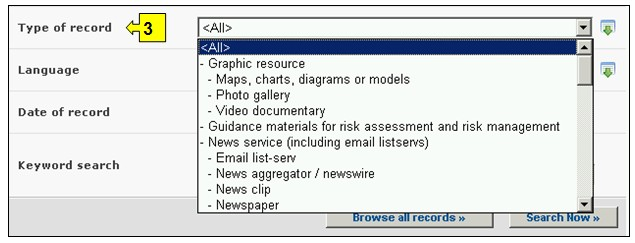
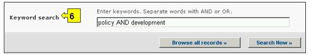
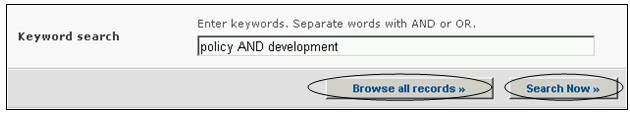

عنوان الموقع على الشبكة: http://bch.cbd.int/database/resources/
تقضي المادة 20 من البروتوكول بإنشاء غرفة تبادل معلومات السلامة الأحيائية لتيسير تبادل المعلومات والخبرات في مجال الكائنات الحيّة المحوَّرة فيما بين الأطراف بغية مساعدة هؤلاء في تنفيذ البروتوكول. وللمساعدة على تأدية هذا الدور، تتضمّن غرفة تبادل معلومات السلامة الأحيائية معلومات تقدمها الأطراف والحكومات والمنظمات، ذات صلة بالسلامة الأحيائية وتنفيذ البروتوكول.
ويتضمن مركز موارد معلومات السلامة الأحيائية قوائم إلكترونية بالمنشورات وموارد المعلومات ذات الصلة بالسلامة الأحيائية. والهدف من المركز هو زيادة إمكانية وصول صناع القرارات وخبراء التربية والتعليم والباحثين وعامة الجمهور إلى المعلومات والموارد المتاحة في مجال السلامة الأحيائية والاستفادة منها. ويعتبر موضع الترحاب تقديم إسهامات إلى مركز موارد معلومات السلامة الأحيائية من جميع المستعملين المسجَّلين في غرفة تبادل معلومات السلامة الأحيائية.
ويمكن النفاذ إلى ايجاد المعلومات حول مركز موارد معلومات السلامة الأحيائية من قائمة الاختيارات المنسدلة في شريط التصفح، أو من الوصلة الموجودة في القائمة اليسرى من صفحة إيجاد المعلومات، أو من الوصلة في النص الموجود على الصفحة ذاتها بشأن مركز موارد معلومات السلامة الأحيائية.

صورة 82
وهذه الوصلات تمكِّن المستعملين من الاطلاع على الفهارس الإلكترونية للمنشورات وموارد المعلومات ذات الصلة بالسلامة الأحيائية بما في ذلك:
1. الخدمات الإخبارية؛
2. مواد دليلية لتقييم وادارة المخاطر
3. قوائم بريد إلكتروني بطالبي المعلومات؛
4. مقالات؛
5. تقارير ؛
6. اليوميات والرسائل الإخبارية؛
7. مواد تدريس (أدلة عملية ومجموعة أدوات وعروض بيانية)
8. موقع الكتروني، مراجع متوفرة على الخط وآلية البحث.
وتوجد على هذه الصفحة ستة أُطُر لمعايير البحث مؤمنة لتحسين البحث في قاعدة المعلومات . ولكل واحد منهم هنالك قائمة منسدلة تسمح باختيار المعايير المطلوبة. التركيب الاجمالي لقائمة الخيارات المنسدلة هي الفقرة الاولى على رأس قائمة الخانة. الزر الموجود على جهة اليمين من كل اطار يسمح للمستخدم بتفعيل عدة اختيارات. عندما يكون المستخدم في اسلوب الاختيارات المختلفة، من الممكن ان يضاف معايير مختلفة للاختيارات من خلال الضغط على المعيار المناسب والضغط على مفتاح (Ctrl).

صورة 83
الإطار 1 {تاريخ النشر} يتضمّن خيارات تتعلق بتاريخ نشر المقال. ويسمح الإطار الأول للمستعمل بأن يختار السنة المحددة للمنشورات التي يتم البحث عنها في اطار السنة. يمكن تصفية مدى الوقت من خلال اختيار السنة ما قبل او ما بعد السنة المحددة في اطار السنة.

صورة 84
الإطار 2 {المواضيع الرئيسية} ينتج قائمة بالمواضيع الرئيسية للمنشورات المتوفرة ويسمح للمستعمل بتضييق نطاق البحث ليقتصر على مجال واحد أو أكثر من هذه المجالات.

صورة 85
الإطار 3 {نوع السجل} ينتج قائمة بأنواع السجلات المختزنة في قاعدة بيانات مركز موارد معلومات السلامة الأحيائية. ويسمح هذا للمستعمل بأن يضيق نطاق البحث على مصدر محدد للمعلومات.

صورة 86
الإطار 4 {اللغة} يتضمّن اللغات ويسمح لأي مستعمل بأن يحدّ نطاق البحث ليقتصر على الوثائق بلغة واحدة أو أكثر.

صورة 87
الإطار 5 {تاريخ السجل} يسمح للمستعمل بأن يضيق نطاق البحث إلى التاريخ الذي أُدخل فيه السجل في قاعدة بيانات غرفة تبادل معلومات السلامة الأحيائية. وتعرض قائمة الاختيارات المنسدلة عدداً من الخيارات لتحديد البحث بالسجلات التي تم تقديمها بالمهلة الزمنية المحددة (على سبيل المثال "اليوم الفائت، الشهر الفائت، السنة الفائتة، الخ).

صورة 88
الإطار 6 {بحث الكلمة الدليلية} ايُعرض فرصة لاستخدام الكلمات الدليلية لتضييق نطاق البحث. ويستطيع المستعمل أن يستخدم تكوين جملة الكلمات الدليلية المعيارية (و/أو) للبحث مع استخدام عدة كلمات أو أجزاء أساسية من الكلمات (استيراد أو تصدير). البحث الذي يستخدم الكلمات الدليلية يصدر نتائج بالسجلات التي تتضمن النص الذي يتم البحث عنه فقط وليس المفردات التي لم يتم ادخالها (على سبيل البحث عن "الذرة" ينتج قائمة بالسجلات التي تحوي فقط كلمة "الذرة" ولكن ليس "Corn" أو "Zea mays").

صورة 89
ويوجد في أسفل آلية البحث ثلاث ازرار لانتاج قائمة بالسجلات. ويسمح زر ابحث الآن Search Now للمستعمل بأن يشغّل برنامج بحث استناداً إلى معايير البحث المختارة في أُطُر آليات البحث. نتائج البحث تفرز ابجديا مبدئيا وفقا لاسم البلد. ويسمح اختيار تصفح جميع الوثائق Browse all records (في أسفل آلية البحث) للمستعمل أن يحصل على قائمة بجميع السجلات الموجودة في قاعدة البيانات هذه.

صورة 90
وتوجد في صفحات نتائج البحث Search Results آلية تصنيف أعلى قائمة السجلات. وهذه يمكن استعمالها لتصنيف السجلات وفقاً للمعايير المحدّدة لتلك الفئة من المعلومات. وتذكّر أن معايير التصنيف تتغيّر عندما يختار المستعمل معايير مختلفة للبحث.

صورة 91
مثال: يرغب مستعمل في استبانة المقالات المحرَّرة مؤخراً بشأن مسائل المسؤولية. ويختار المستعمِل: (أ) ما بعد و 2006 في أُطر سنة النشر و (ب) المسؤولية والانتصاف في إطار المجال المواضيعي. وبالضغط على زر ابحث الآن Search Now، تظهر نتائج البحث. وتعرض النتائج بالترتيب الأبجدي استناداً إلى عناوين المقالات.

صورة 92

صورة 93